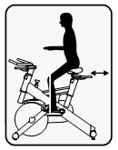

操作保養
【調整座椅】
Seat Height 座墊高度
座墊高度對騎車的舒適性和安全性有很大的關係。
- 調整座椅到臀部高度的位置，把腳放到鞋套內，將一側踏板踩到底。
- 確認踩到底一側的腳膝蓋是保持微彎(約5度)的。
- 踩到底時，腿如果是完全伸直的，則需要調降座椅高度。反之，則需調高。否則膝蓋會受到傷害。需要微彎來預留緩衝空間。
- 調整時，請鬆開椅墊下的調整把手來調整高度，請勿坐在飛輪車上直接調整。
- 座椅調至適當位置後，請務必鎖緊椅墊下的調整把手，以固定座管高度。
Fore/After Position座墊前後
正確的座墊前後位置讓膝蓋保持在正確位置。

- 坐在飛輪車上，將踏板轉至水平方向，調整座椅前後位置直到膝蓋與踏板成一直線。
- 將踏板踩到一前一後，讓曲柄與地面平行。前腳的臏骨前緣落在腳拇指球的正上方。
- 調整時，請勿坐在飛輪車上進行調整。鬆開座椅下方的前後調整把手，調整座椅的前後位置，再鎖緊調整把手。
【調整手把】
Handlebar Height 手把高度
- 手把的高度一般調至與座墊同高，在感覺舒服的前提下，可以將手把高度降低一點。初學者可以將手把高度調高一點減低下背部及頸部的壓力。
- 鬆開手把管的上下調整把手，調整到理想的高度，然後鎖緊調整把手。
Handlebar Fore/After手把前後
- 鬆開手把下的前後調整把手，調整到覺得舒服，能讓手肘微彎的位置。
- 鎖緊前後調整把手，固定手把位置。
Foot Position腳的姿勢
讓腳拇指球踩在踏板的軸心位置，拉緊鞋套繫繩。在踩踏時保持腳踝在90度左右，避免踮腳尖踩。
【基本操作】
當您調整好適當的騎乘位置後，請花幾分鐘時間騎乘，確定這個位置是舒適的。開始緩慢地向前踩踏板，輕握手把，放鬆肩膀和上半身，先用較低的阻力騎乘，直到您可以輕鬆騎乘一段時間以後再增加阻力。
- 飛輪的阻力是藉由阻力鈕來控制的。轉動阻力鈕可隨時改變阻力大小：順時針轉動，阻力較大；逆時針轉動，阻力較小。
- 如果想要煞車，直接按壓阻力鈕就可以了。
- 想停止運動、跨下飛輪車前，先按壓阻力鈕以停止飛輪，或是增加阻力的方式讓飛輪停下來。
【維護指南】
| 零件 | 建議措施 | 頻率 | 清潔劑 | 潤滑劑 |
|---|---|---|---|---|
| 踏板 | 確保踏板已鎖緊在曲柄上、踏板上的全部螺絲都已鎖緊、踏板的腳束沒有磨損 | 每次使用前 | 無 | 無 |
| 主架 | 用乾淨的軟布沾濕後擦拭主架 | 每天 | 水 | 無 |
| 飛輪 | 先將WD-40噴在乾布上，再輕輕塗在飛輪的兩面 | 一星期一次 | WD-40® | |
| 煞車片 | 檢查煞車片是否過度磨損 | 一星期一次 | 無 | 3-IN-One Oil®, WD-40® or 10W Oil.請勿用矽靈油 |
- 不要維修踏板內部的零件，如果它壞了，建議直接替換新的踏板。
- 若使用其它清潔劑或潤滑劑，將造成部份零件的功能失效或使用壽命減損。
- 如運動過程中，大量流汗，需立即將滴落飛輪上的汗滴處理掉，請盡量保持飛輪乾燥，避免潮濕或碰水，以防生鏽。